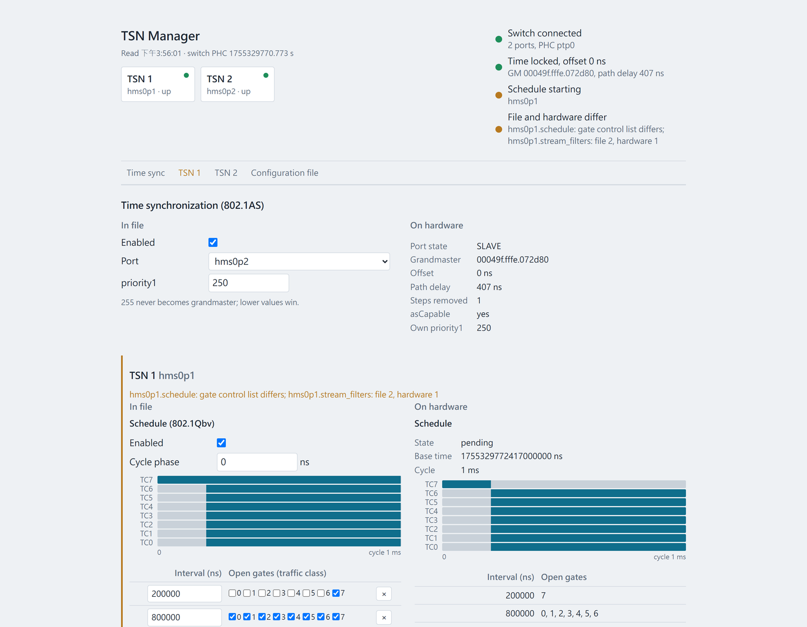
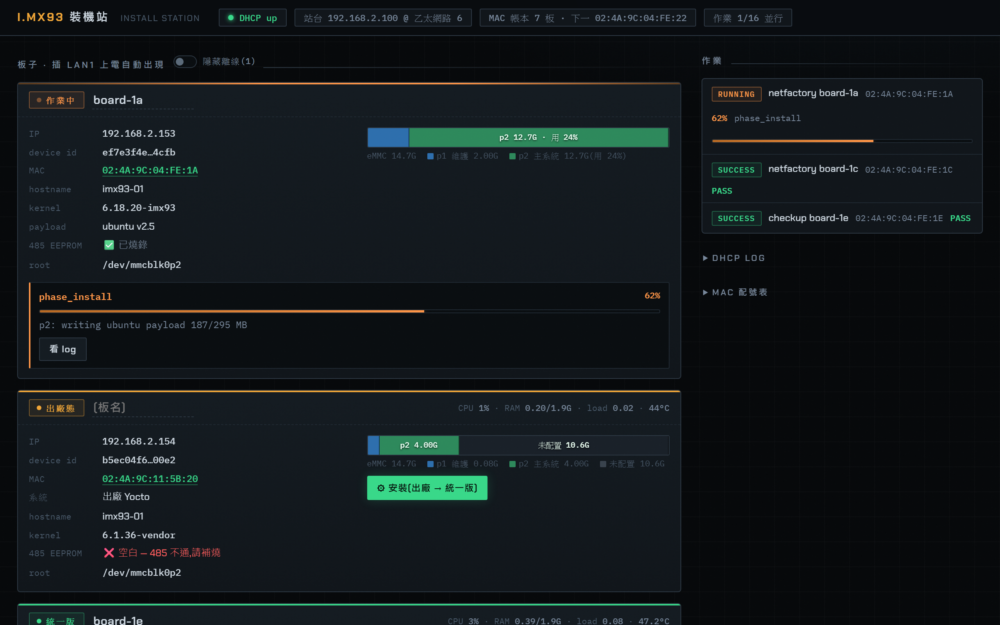
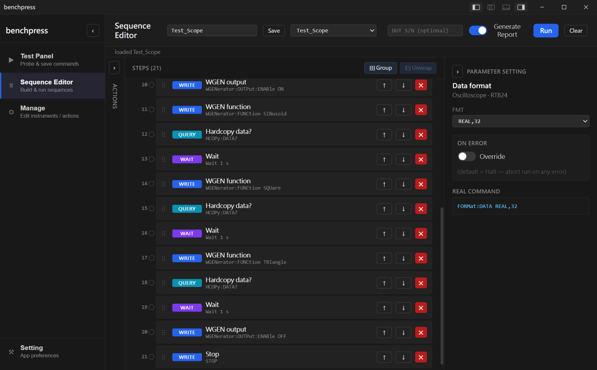

| Ref | Part零件 | Description說明 | Year年份 | Status狀態 |
|---|---|---|---|---|
| U5 | genio 420 | Ubuntu 26.04 port, install station, TSN switch and camera for a MediaTek Genio 420 module.MediaTek Genio 420 模組的 Ubuntu 26.04 移植、裝機站、TSN 交換器與相機。 | 2026 | In delivery交付中 |
| U4 | i.MX93 bsp | BSP rebuilt from source and an install station for an industrial i.MX93 board. Linux, Python.工業用 i.MX93 板的 BSP 自建與裝機站。Linux，Python。 | 2026 | Delivered已交付 |
| U1 | benchpress | Instrument control and test sequencing for a lab bench. Windows, Rust.實驗室儀器控制與測試排程。Windows，Rust。 | 2026 | Released已出貨 |
| U2 | tujia pos | Order book for a bakery counter. Android, iPad, Windows, Rust.麵包店櫃台的訂單系統。Android、iPad、Windows，Rust。 | 2026 | In use使用中 |
| U3 | scope dll | Soft AMR and FWF measurement DLL for an R&S RTB2000 oscilloscope. Windows, C++.R&S RTB2000 示波器的 Soft AMR 與 FWF 量測 DLL。Windows，C++。 | 2025–26 | In use使用中 |
| J1 | how i work with ai | How I built U1 and U2. Git, three documents, gates.我怎麼做出 U1 和 U2。Git、三份文件、關卡。 | 2026 | Living持續更新 |

Ubuntu 26.04 on a MediaTek Genio 420 module that MediaTek supports only to 24.04 (as of 2026). Kernel from source, an install station, and an RT1180 switch that passes four TSN tests. MediaTek 只支援到 24.04（2026 年時）的 Genio 420 模組，裝上 Ubuntu 26.04。kernel 自建、裝機站、通過四項 TSN 測試的 RT1180 交換器。
- For對象A module maker with its own carrier board.有自家載板的模組廠。
- Kernel6.6.137 rebuilt from IoT Yocto v26.0. Device trees byte-identical to the vendor's.6.6.137 從 IoT Yocto v26.0 重建。device tree 與原廠位元組一致。
- Install安裝Station or USB stick. Factory restore 100 s, unified system 135 s.站台或 USB 碟。回復出廠 100 秒，裝統一版 135 秒。
- Network網路802.1AS, Qbv, Qci, Qbu verified with hardware timestamps. One YAML drives the switch.802.1AS、Qbv、Qci、Qbu 以硬體時戳驗過。一份 YAML 驅動交換器。
- Camera, AI相機、AIGMSL3 camera bring-up. IP camera decode latency 107 to 5 ms. Qwen3VL-2B on the NPU.GMSL3 相機 bring-up。IP camera 解碼延遲 107 降到 5 ms。NPU 上跑 Qwen3VL-2B。
- Build開發396 commits so far, AI-assisted; method in J1.396 個 commit，持續中，AI 協作，方法見 J1。

The board vendor's engineer had left and the Linux build could not be reproduced. I rebuilt bootloader, kernel and system image from NXP sources, then built the install line that puts them on every board. 板廠的工程師離職，Linux 建置無法重現。我從 NXP 原始碼重建 bootloader、kernel 與系統映像，再做出把它們裝到每塊板上的安裝線。
- For對象A board maker shipping an industrial i.MX93 product.出貨工業用 i.MX93 產品的板廠。
- Rebuilt自建SPL, TF-A, OP-TEE, U-Boot, kernel 6.18.20. No vendor binary left.SPL、TF-A、OP-TEE、U-Boot、kernel 6.18.20。原廠 binary 全退役。
- Install安裝Network only, no serial cable, about 15 min. Web station, 16 boards in parallel.純網路，不接 serial，約 15 分鐘。網頁站台 16 塊並行。
- Fixed修正An interrupt storm from the device tree, DRAM timing, a blank RS-485 EEPROM.device tree 的中斷風暴、DRAM timing、空白的 RS-485 EEPROM。
- Delivered交付7 boards. Customer repo, sha256 ledger, field update
.deb.7 塊板。客戶 repo、sha256 校驗清單、現場更新.deb。 - Build開發Python, 2 tools. 147 commits in one month.Python，2 支工具。147 個 commit，一個月內。

benchpress controls bench instruments over GPIB and Ethernet. Test sequences are built from blocks, without code. benchpress 透過 GPIB 與 Ethernet 控制儀器。測試序列用積木組，不用寫程式。
- For對象An R&D lab, replacing its LabVIEW station.一間研發實驗室，取代原本的 LabVIEW 工作站。
- Instruments儀器7 models, 167 SCPI templates款，167 條 SCPI 模板
- Blocks積木9 types. Each instrument runs in its own parallel lane.種。每台儀器在自己的平行車道上執行。
- Also另有MCP server for LLM clients, headless CLI, step debugger, offline license給 LLM 用的 MCP server、無頭 CLI、單步除錯器、離線授權
- Verified實機R&S RTB24 on real hardwareR&S RTB24 實機驗收
- Build開發Rust, Dioxus. 286 commits over five months.Rust、Dioxus。286 個 commit，歷時五個月。


tujia pos replaces the handwritten order book at my mother-in-law's bakery. One Rust codebase runs on an Android tablet, iPad and Windows. tujia pos 取代岳母麵包店的手寫訂單簿。一份 Rust 程式碼在 Android 平板、iPad、Windows 上執行。
- For對象One elderly owner. Orders come by phone, Messenger and walk-in.一位高齡店主。訂單來自電話、Messenger 和現場。
- Rules規則Text 18 pt minimum. Touch targets 48 px minimum. 3 taps maximum. No menus.文字最小 18 pt。觸控目標最小 48 px。最多 3 步。沒有選單。
- UndoThe owner can undo every change.店主可以還原每一個變更。
- Stock庫存One SQLite file holds orders, kiln batches and walk-in stock.一個 SQLite 檔保存訂單、窯次和現場庫存。
- Backup備份Google Drive, every 10 minutes. The app works offline.Google Drive，每 10 分鐘。離線也能用。
- Status狀態In daily use at the counter.櫃台每天在用。

A C++ DLL that puts an R&S RTB2000 oscilloscope into a third-party ATE. The ATE calls one function per test step and reads the files back. 把 R&S RTB2000 示波器整合進第三方 ATE 的 C++ DLL。ATE 每個測試步驟呼叫一個函式，再讀回檔案。
- For對象A third-party ATE on a production line. One session per pin.產線上的第三方 ATE。每支 pin 一個 session。
- APIsSoft AMR watches a voltage window and keeps every excursion. FWF captures up to 4 channels in sync.Soft AMR 監看電壓窗，留下每次超限。FWF 同步擷取最多 4 個通道。
- Output產出A screenshot per segment. HTML, XLSX, CSV, JSON.每個 segment 一張截圖。HTML、XLSX、CSV、JSON。
- Verified實機RTB2004 on real hardware. In use at the customer.RTB2004 實機。客戶使用中。
- Platform平台Windows 7 to 11, x64 and x86, installer with a VISA check.Windows 7 到 11，x64 與 x86，安裝檔含 VISA 檢查。
- Build開發C++17, CMake. 35 releases, 152 commits over 14 months.C++17、CMake。35 個版本、152 個 commit，歷時 14 個月。
This note shows how I built U1 and U2 with Claude Code. I write the specification before the code. Tests and hardware runs are the gates. 這篇說明我怎麼用 Claude Code 做出 U1 和 U2。先寫規格，再寫程式。測試和實機執行是關卡。
Read J1 →看 J1 →